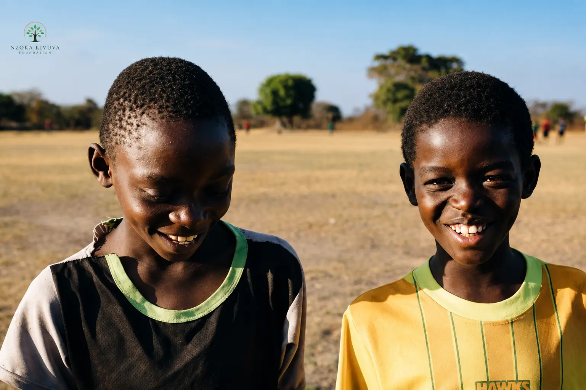

The Nzoka Kivuva Foundation, in collaboration with community leaders and local organizations, successfully hosted a life skills camp for over 200 young people in Kabaa, Machakos County. The camp focused on building mental resilience, leadership skills, and positive role modeling — equipping participants with tools to navigate life's challenges and become leaders in their communities.
The four-day camp brought together youth from across Mwala sub-county, offering a safe and supportive environment for learning, connection, and personal growth.
.jpeg)
Building Resilience and Leadership
The camp featured a series of workshops and activities designed to address the holistic development of young participants, including:
- Mental resilience and stress management
- Teamwork and conflict resolution
- Positive role modeling and mentorship
- Leadership development and goal setting
- Self-awareness and emotional intelligence
"The skills I learned at this camp have changed how I see my future. I now believe in myself and know that I can make a difference in my community."
Community-Led, Community-Focused
What made this camp special was its deep community involvement. The camp was facilitated by a team of 15 local community leaders, educators, and youth mentors who volunteered their time and expertise. This ensured that the content was culturally relevant and tailored to the specific needs of young people in Kabaa.
"This camp was not just about teaching skills — it was about building a movement of young leaders who will inspire change in their communities," said one of the facilitators.
.jpeg)

Impact Beyond the Camp
The camp's impact is already being felt beyond the four-day event. Participants have formed peer support groups to continue their learning journey, and many have expressed interest in becoming mentors for younger children in their communities.
"The foundation is committed to ensuring that the skills learned at this camp translate into lasting change," said Advocate Nzoka Kivuva, Executive Director. "We're already planning follow-up sessions and advanced workshops to deepen the impact."
What's Next
Building on the success of the Kabaa camp, the foundation aims to expand the life skills program to three additional locations in Machakos County by the end of 2026. These camps will target vulnerable and underserved youth, providing them with the tools they need to thrive.
- Advanced leadership training
- Mentorship pairings with professionals
- Entrepreneurship and livelihood skills
Help Us Reach More Young People
KSh 500 provides life skills materials for 5 young people. Join us in empowering youth across Machakos County with the skills they need to succeed.
.jpeg)
.jpeg)